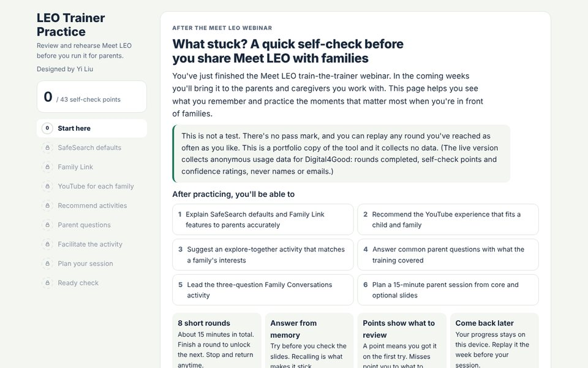

LEO Trainer Practice

Click the image to experience the project.Purpose: Meet LEO is a Google program that trains educators, PTA leaders and community trainers to teach families about Google's online safety tools. Trainers often present weeks after the webinar, so I built a 15-minute practice room where they rehearse from memory, answer tough parent questions and run a simulated group activity before facing real parents.
Tools: HTML, CSS, JavaScript, Google Apps Script
Highlights: Retrieval practice, scenario-based learning, facilitation simulation, pre/post confidence ratings, accessible drag-or-tap interactions
Project Deliverables: Interactive Practice Tool